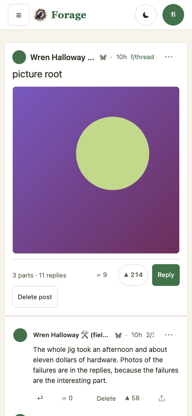
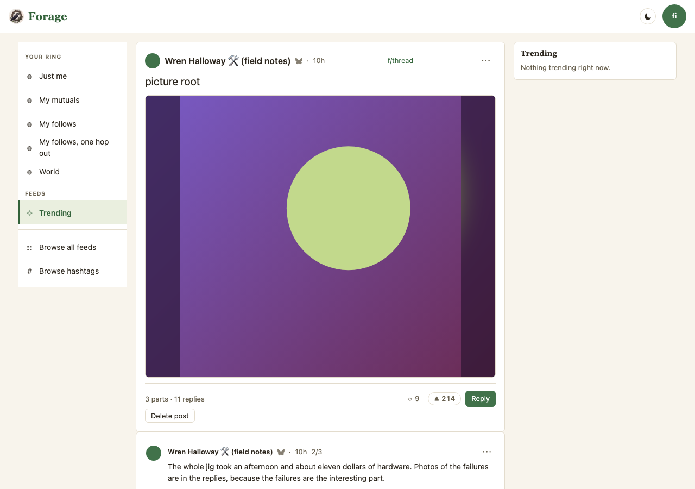

A post in parts, and the comment that was mistaken for one
Two proposals and five decisions, one of them settled by measurement, from the owner’s report on 2026-09-03 with four screenshots: “if I write a comment I don’t see it right away … in some cases it’s actually showing up as part of the original post? but still says 1 reply? it’s confusing and wrong” — and, a message later, “deleting that ‘comment’ did in fact delete the post”.
All three symptoms are one rule. Forage treats a top-level reply by the author
as more of the post — the 1/3, 2/3, 3/3 shape — hoists its words into the post body and
takes it out of the comment list. That rule is right, and the research below is why: it is
the network’s own rule, and Bluesky shipped the matching 2/3 badge to every user
on 2026-09-02. What was wrong is that a hoisted part arrived as anonymous body text
— no number, no time, no permalink, and nothing that could delete itself, so the only Delete
on the card was the post’s.
The two proposals are two placements of the same thing. Proposal A keeps the chain in the post’s head, which is forage’s forum shape: one post header carrying the whole narrative. Proposal B pins the chain above the comments, each part an ordinary post wearing its badge, which is what Bluesky itself does. Both are captures of the engine on this branch, from one builder — there is no second renderer, and neither frame is a drawing.
Frames: 390×844 and 1280×900, default skin (warm),
signed in as the poster — the delete hazard only exists for the person who can see a
Delete button. Population: e2e/harness/mock-selfthread.mjs.
Claims held by e2e/self-thread.workflow.mjs.
What is open
| # | Decision | Options, and where it stands |
|---|---|---|
| 1 | Does a self-reply mean “more of the post”? | Settled by measurement — yes, keep it. 1,641 real self-replies from 246
authors, sampled through the appview on 2026-09-03. A clock cannot separate the two
readings: Bluesky’s own appview returns opThread: true for self-replies
1.3h and 2.4h after their parent, numbering them 2/2 and 3/3, and only
3.7% of chains write “1/3” in their words. Raise it if you disagree;
nothing below depends on re-opening it. |
| 2 | Where the chain is drawn | Open — this is the choice the frames are for. A: in the head (forage’s forum shape, the parts are the post’s body) or B: pinned above the comments (the network’s shape, each part an ordinary post). You said you want the chain shown as one post header, which is A; B is here because it solves decisions 3 and 4 for free, and you should see what you are turning down. |
| 3 | What the head’s count says | Proposed on both: 3 parts · 11 replies, and the number is the
list by construction. It was the appview’s replyCount, which counts a
hoisted part and cannot count a re-rooted one — that is where “1 reply”
over “No replies” came from. Alternative: drop the parts number and say
“11 replies” alone. |
| 4 | Delete | Proposed on both: every part carries its own Delete, and the post’s button says “Delete post”. Two buttons reading “Delete” on one card is the ambiguity that cost you the post. Open only in the wording. |
| 5 | An escape hatch — “post this as a separate comment” | Recommend not building it. Your idea, and the research argues against it: any marker forage writes is invisible to every other client, and 76% of the chains forage renders are written elsewhere. It would work on the minority and change nothing on the majority. More to the point, once a part is numbered, timed and independently deletable, there is nothing left to opt out of — the confusion was the anonymity, not the classification. Say the word and it goes on the list anyway. |
One image post, one reply by its author, nothing else
Your own case, rebuilt: a post with no words and no alt text, so the only sentence on the card is the one the hoist put there. This is the tree where the contradiction is audible — under eleven replies a wrong count hides in the crowd; here it is the whole card.


- Current says two things at once. “1 reply” on the card, “No replies · Nothing below this post yet” underneath it. The first number is the appview’s; the second is the list. Neither knew about the other.
- Current offers one button, and it takes the post. The words above it are the reply’s, which is what made it read as the reply’s button.
- Proposed:
2/2 · 7h ago · link · Deleteon the part,2 parts · 0 replieson the head,Delete postbelow it. The empty state is still honest — nobody has answered — it just no longer contradicts a number four lines above it.
The chain in the head — one post header, the whole narrative
A three-part post (the root is 1/3) under the measured load: eleven replies, one part posted in the same batch as the root, one posted 3h17m later carrying a picture of its own, and a decoy — a later self-reply the appview ranks first.


- The decoy is the second bug these frames caught. Main hoists
“they are called Fastenal” — a self-reply written 2h20m after
part two, which the appview merely returned first.
getPostThreadranks its replies; it does not return them oldest-first. A two-part post could render back to front. The network states the rule and the branch follows it: “the oldest contiguous line of OP replies from a thread root”, with the rkey breaking ties, because 43% of real chains tie oncreatedAt— a composer posts a chain in one batch. - A part is the body, so it gets no second byline. The author is the same person and repeating the avatar and name would read as a new speaker. It gets the strip instead: which part, when, a link, its own Delete.
- What A costs: a part cannot be replied to, liked, or reposted where it stands, and it
has no
…menu. Those are node affordances and a part is not drawn as a node here. If that matters, it is an argument for B.
The chain pinned above the comments — what the network does
The same three-part post, the same load, the parts drawn as what they are: ordinary
posts, each wearing a 2/3 badge, standing above the sort bar because they are not
competing with the replies for a position.

- Every part keeps its controls, because it never stopped being a post — Reply,
like, repost, share, the
…menu, and its own Delete. That is decision 4 answered by the shape rather than by a new strip. - The badge sits on the byline, where forage’s other “what kind of node is
this” marks already live (the quote’s
⟳ quoted thisuses the same seam). Bluesky puts it as a suffix on the text instead; one place per app is the point, not which place. - Parts stand above the sort bar and outside the sort. The network is explicit about this in its own sorter — “the chain continuation always appears first beneath its parent, regardless of the selected sort”. Sorting a post’s second paragraph by Hot is a category error.
- What B costs: forage stops looking like a forum at exactly the moment a forum would help. A three-part essay reads as three cards, not one post. This is the thing you said you did not want, and the frame is here so the trade is visible rather than described.
The same three, at 1280×900



The research, and what it killed
- There is no marker in the record, and that is deliberate.
app.bsky.feed.postcarriestext,facets,reply(root and parent, no kind and no ordinal),embed,langs,labels,tags,createdAt. Explicit threading was proposed in atproto discussion #2321 — “x/73” markers and next-post pointers — and declined in favour of deriving it. Nothing incommunity.lexicon.*covers post series, and no other client mints one; the long-form clients (Whitewind, Leaflet) mint a bigger record type instead. - The concept exists, computed read-side.
app.bsky.unspecced.defs#threadItemPost:opThread— “part of a contiguous thread by the OP from the thread root” — plusopThreadPostIndexandopThreadPostCount. That is the2/3badge, and the rule behind it is the one forage already had. - It shipped to everyone the day before the report. atproto #5249 added the
numbering on 2026-07-31; social-app #11639 removed its feature gate on
2026-09-02. You may start seeing
2/3badges in the Bluesky app this week. - A clock cannot separate the two readings. Measured, 958 top-level self-replies:
43% land under 10s, p50 38s, p75 4.6m, p90 1.0h, and 10% land more than an hour later.
Asked directly, Bluesky’s appview called live self-replies at 1.3h and 2.4h
opThread: true, numbering them 2/2 and 3/3. A time gate would put forage out of step with the network on real threads. - Nor can the words. Only 3.7% of chains write “1/3”-style numbering at all.
- The shape is common, not an edge case. 76% of popular roots carry a self-reply chain; chains run 2–3 parts; those roots carry a median of 11 replies (max 239). The population above is built to those numbers.
Sampled from the public discover feed through
public.api.bsky.app on 2026-09-03: 1,641 self-replies across 246 authors, 958 of them
top-level replies to the author’s own root — the case forage hoists. Sources read:
bluesky-social/atproto (op-thread.ts, threads-v2.ts,
unspecced/defs.json, feed/post.json) and
bluesky-social/social-app (feed-manip.ts,
ThreadItemPostNumber.tsx, usePostThread/).
What runs, and what holds it
| Claim | Where it lives | Held by |
|---|---|---|
| The oldest self-reply continues the post | js/substrates/lens.js — oldestSelf() |
test/lens.test.js “the chain follows the OLDEST self-reply”; e2e/self-thread.workflow.mjs (the decoy stays a comment) |
| A part is numbered 2/3, the root being 1/3 | js/substrates/lens.js — parts, part |
test/lens.test.js; both workflow blocks read the badges off the DOM |
| A part carries its author, cid and time | js/substrates/lens.js — selfThread.push |
test/lens.test.js “carries what a control needs” |
| The count is the list | js/substrates/lens.js — replyCount; js/ui/lens-views.js head |
test/lens.test.js ×2; e2e/self-thread.workflow.mjs (3 parts · 11 replies, and the reported tree) |
| Every part can delete itself; the post’s button says post | js/ui/lens-views.js — partMeta, deleteControl({ label }) |
e2e/self-thread.workflow.mjs (both placements) |
| One builder serves both placements | js/substrates/lens.js — partNodes |
test/lens.test.js “built by the same builder as a comment” |
| Pinned parts stand above the sort bar | js/ui/lens-views.js — pinnedParts |
e2e/self-thread.workflow.mjs |
- The switch is temporary.
js/self-thread-view.jsexists so both placements could be captured from the engine rather than drawn. The landing after your decision collapses it to the chosen one and deletes the file. - Found, filed, not fixed: at 390px a comment’s action row clips its Delete to
“Delet” when the row also carries fold, reply, repost, like and share.
Reproduced identically on main in the Current frames, so it is not this branch’s and is
not fixed quietly here.
TODO.md. - Also filed: in B at 390px, a long display name plus the badge crowds the byline (“Wren Halloway 🛠️ (fiel… · 10h · 2/3”). Visible in the Proposed B phone frame; it is an argument about where the badge goes, not whether.
v1
| v | Date | Commit | What changed on this page |
|---|---|---|---|
| 1 | 2026-09-03 | 5f65749 |
First. Two proposals, five decisions (one settled by measurement), three captured
columns (main 8bc6cbd, and both placements at 5f65749) over a new
population, e2e/harness/mock-selfthread.mjs, measured off 1,641 real
self-replies. |